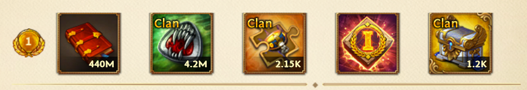
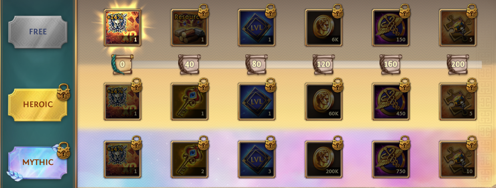
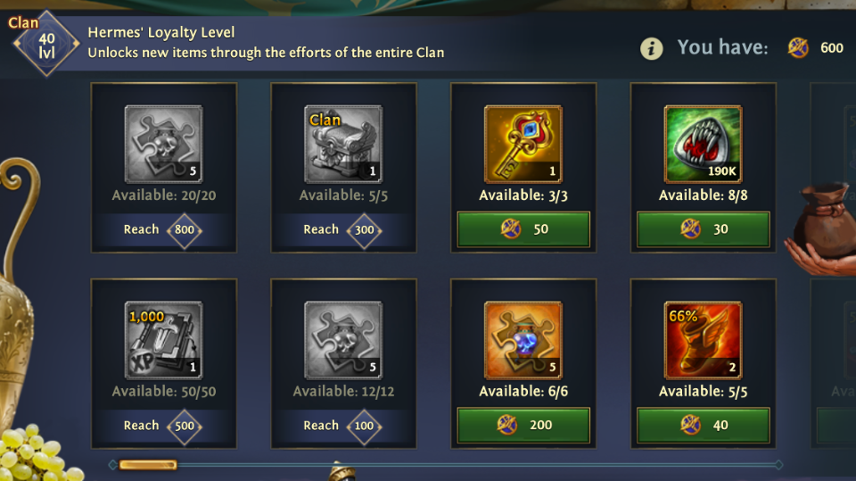
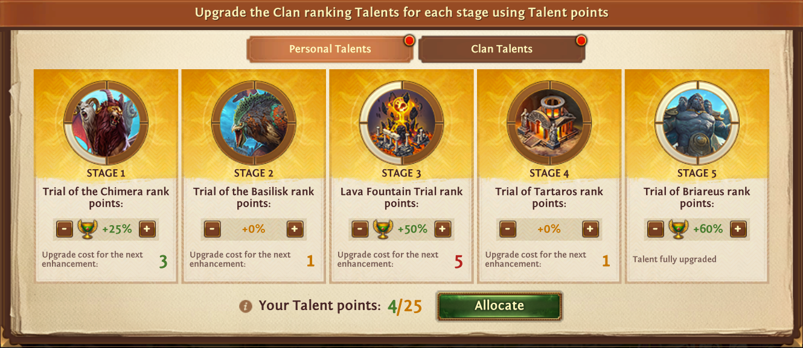

Official CxN clan strategy for the Trials of Olympus event in Total Battle. This multi-day clan tournament features Greek-mythology stages, a Battle Pass, Hermes' Store, and clan ranking rewards. Use this guide to participate effectively and maximize rewards.
Trials of Olympus is one of the top tournaments for personal and clan growth, very similar to Ragnarok. Personal participation is not only mandatory, but highly desired by those who wish to grow quickly and effectively.
What Is the Trials of Olympus?
The Trials of Olympus is a clan tournament that runs over multiple days. Each day, a new stage opens with its own activity on the World Map. You and your clanmates earn rank points and personal rewards by completing trials, Battle Pass goals, and (for clans) ranking in your division.
Who can participate?
- Your clan must be player-created, have at least 55 members, and have a Clan Capital.
- At the start of the tournament, clans are placed into divisions of three. Matchmaking is based on total clan might, number of members, and troop levels—higher indicators mean stronger opponents.
- If you are not in a clan, or your clan does not participate in rankings, you can still complete the Battle Pass and buy items from Hermes' Store, but clan ranking rewards and some event parts are unavailable.
- The tournament is not available in newly created kingdoms under the Shield of Peace that do not participate in cross-realm interactions.
Tournament Stages (One Per Day)
Each day unlocks a new stage with its own World Map activity. Complete personal goals and contribute to clan rank points.
- Trial of the Chimera — Defeat epic Chimera squads on Clan Raids.
- Trial of the Basilisk — Defeat epic Basilisk squads with your Hero.
- Lava Fountain Trial — Place and capture Lava Fountains to extract Lava Oil.
- Trial of Tartaros — Use Lava Oil to explore unique Tartaros Crypts.
- Trial of Briareus — Defeat epic Briareus squads with three Captains of your choice.
Unclaimed personal rewards from a trial are lost when that trial ends. Claim them before the stage closes.
Rewards: Three Sources
The Trials of Olympus offer three main reward streams: clan ranking, Battle Pass, and Hermes' Store.
Clan ranking rewards
Rewards depend on your clan’s division. Clans must reach a minimum number of rank points (set per division) to unlock even the last reward.
Aside from Scientific Tractates and Dragon Coins, clans can win Torch of Olympus artifact fragments and Olympus chests. The winning clan in each division also receives Proof of Victory, which increases the Olympian bonus for Valor and Experience from the Battle Pass in future Trials of Olympus. Only players who were clan members at the start of the tournament receive Proof of Victory.

Battle Pass
Earn Scrolls of Olympus by completing personal goals for each stage. Use them to claim rewards from the Battle Pass. Unclaimed rewards are sent to the Journal at the end of the tournament.

Hermes' Store
Unlock extra store items by raising Hermes' Loyalty as a clan through the Trials of Olympus Battle Pass. Then complete tournament goals to earn Winged Drachmas and spend them in the store. You can also earn Winged Drachmas from the Battle Pass. Winged Drachmas carry over to the next tournament.
Hermes' Loyalty is per clan and resets each new tournament. Loyalty stays with the clan; if you leave, only items that require a certain Loyalty level are locked for you. If you join a new clan with sufficient Loyalty, those items become available again.

Talents in the Trials of Olympus
At the start of the tournament, players receive Talent points to assign across different stages. You cannot earn more Talent points during the event.
- Talents increase the number of Trials of Olympus rank points you earn. This applies only to rewards for personal milestone goals completed after the Talent allocation is confirmed.
- The clan also gets Talent points that the Leader and Superiors can allocate to stages.
- Talent points reset at the end of the tournament.

Lava Oil: How to Get It
- Build your own Lava Fountain and collect Oil from it.
- Capture an enemy’s Lava Fountain.
- Receive it from the Pursuit of Lava Oil event (during the Trial of Tartaros).
- Buy from the store.
In the Trial of Tartaros, target Crypts that match your level so you can complete personal goals reliably.
Lava Fountain Trial: Battle Benefits
During the Lava Fountain Trial, resurrection costs in Lava Fountain battles are reduced by 90%, and irreversible losses are reduced to 5%. Troops that die while attacking Lava Fountains can be revived with Silver.
Attacking an Enemy’s Lava Fountain
Shield of Peace
Attacking a player at a Lava Fountain does not drop your Shield of Peace. You can hit division rivals’ fountains without losing shield protection.
Ways to attack
- Olympus Portals — use them to march to the target (see below).
- Hero Ayrin — if Ayrin is selected, you can march directly.
- Regular march to the mine occupied by the enemy (30 minutes without speedups).
Olympus Portals
Olympus Portals are used to reach Lava Fountains across kingdom borders. Only clans in the same division can attack or close a fountain via Portals. You can only attack the Lava Fountains of the two other clans in your division.
Where to get Olympus Portals
- As rewards in the Lava Fountain Trial.
- Hermes' Store.
- Special offers in the store.
Marches to fountains take at least 30 minutes without speedups.
Divisions: Who You Compete With
Our clan is placed in a division with two other clans. Those two clans can be from your kingdom or from different kingdoms; matchmaking is based on similar power level (total might, member count, troop levels). You can only attack the Lava Fountains of the clans within your specific division.
CxN Strategy: Maximize Lava Oil
Maximizing Lava Oil is the number-one priority in Trials of Olympus.
To maximize gains, we need to engage in PvP with the clans in our division and capture their oil—attack and steal from their Lava Fountains. Because attacking a player at a Lava Fountain does not drop your Shield of Peace, you can do this without losing shield protection. Use Olympus Portals (and Ayrin or regular marches when applicable) to hit division rivals’ fountains and prioritize oil collection from your own fountains, Tartaros Crypts, and captured enemy fountains.
Changing Clans During the Tournament
- All Trials of Olympus rank points and Hermes' Loyalty you earned before leaving stay with the old clan.
- In a new clan, you cannot contribute clan rank points until the next tournament starts.
- Hermes' Loyalty is only awarded to a clan when it was earned while in that clan.
- If you leave during an ally’s march to one of your Lava Fountains, the ally’s troops return to their city instead of mining.
Content adapted from the Total Battle Help Center — Trials of Olympus.